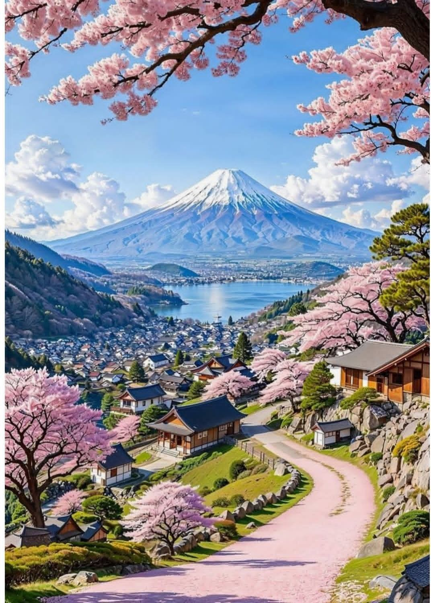
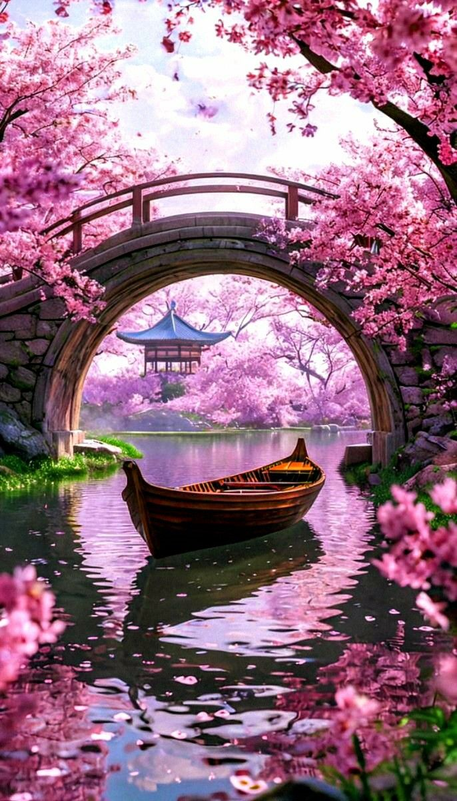

Un espacio dedicado a descubrir la magia de Japón, un país donde la tradición y la modernidad se mezclan de forma única. Desde impresionantes templos antiguos y paisajes naturales llenos de tranquilidad, hasta ciudades futuristas llenas de luces, tecnología y cultura vibrante. Aquí encontrarás recomendaciones de los mejores destinos, experiencias auténticas, consejos de viaje y lugares imperdibles para conocer lo mejor de Japón. Explora sus icónicas ciudades, vive la belleza de sus estaciones como la floración de los cerezos y sumérgete en una cultura rica en historia, respeto y tradición.


